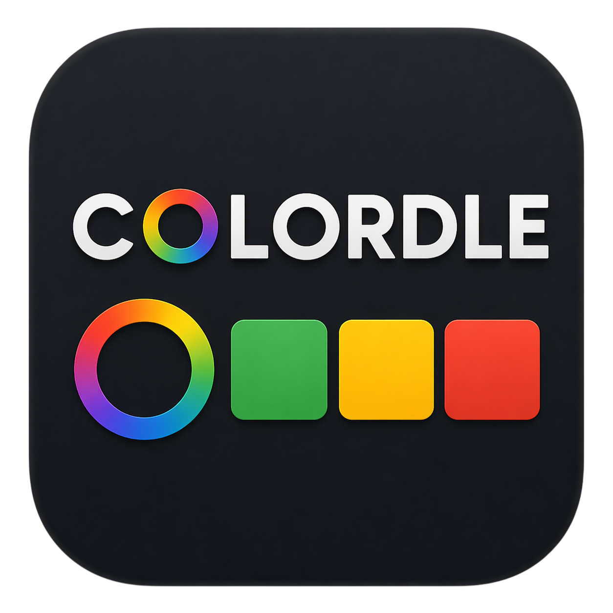

ColordleGuess 0 / 6
Possible target
?
Each bar spans the 0–255 range for that channel. The
highlighted segment is where the target can still be,
after combining everything your guesses told you. Tick marks
are your past guess values. Zones tighten as you get closer:
a yellow result halves them, a green result quarters them.